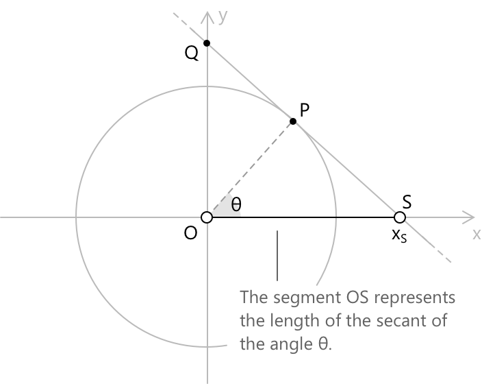
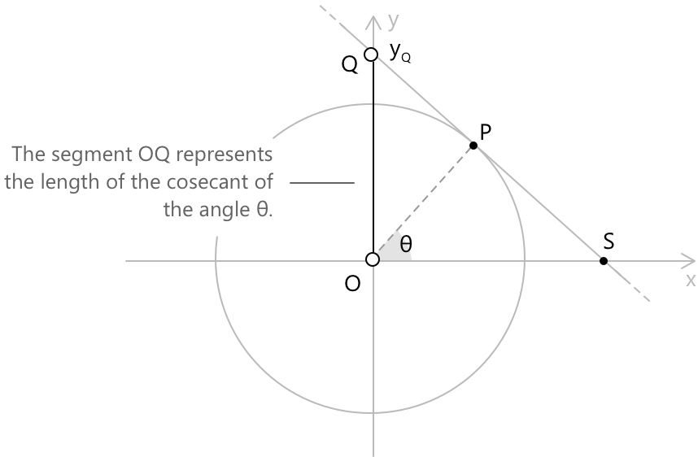
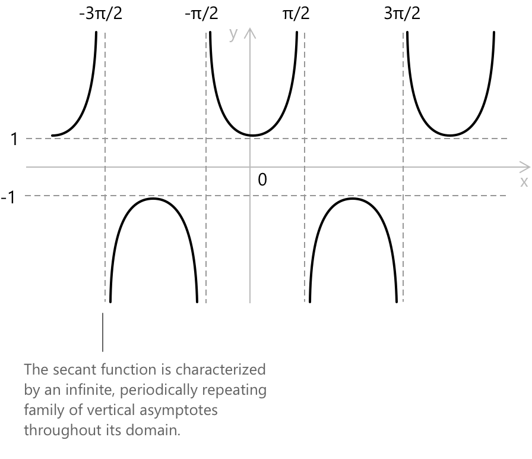
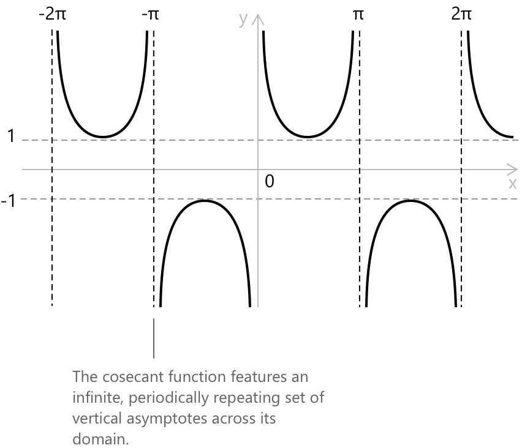

Секанс та косеканс
Секанс
Розглянемо одиничне коло з центром у початку координат \(\text{O} = (0,0)\) та радіусом \(1\). Нехай \(\theta\) — кут у стандартному положенні, і позначимо \(\text{P}\) точку на колі, де перетинається з ним термінальний бік \(\theta\). Проведемо дотичну до кола в точці \(\text{P}\), і нехай \(\text{S}\) буде точкою, де ця дотична перетинає вісь \(x\). Секанс кута \(\theta\) визначається як знакове значення довжини відрізка \(\overline{OS}\), тобто абсциса \(x_S\) точки \(\text{S}\):
\[ \sec(\theta) = \overline{OS} = x_S \]
Щоб виразити цю довжину через відомі тригонометричні величини, розглянемо прямокутний трикутник, утворений точками \(\text{O}\), \(\text{P}\) та основою перпендикуляра, опущеного з \(\text{P}\) на вісь \(x\). Оскільки \(\text{OP} = 1\) і горизонтальна компонента \(\text{P}\) дорівнює \(\cos(\theta)\), а дотична в точці \(\text{P}\) перпендикулярна до радіуса \(\overline{OP}\), за допомогою подібних трикутників можна встановити, що:
\[ \sec(\theta) = \frac{1}{\cos(\theta)} \]

Оскільки секанс є оберненою величиною до косинуса, він визначений лише для тих кутів, де косинус не дорівнює нулю. Косинус дорівнює нулю у всіх непарних кратних \(\pi/2\), тому область визначення секанса виключає саме ці значення:
\[ \sec(\theta) = \frac{1}{\cos(\theta)} \qquad \forall\, \theta \neq \frac{\pi}{2} + k\pi, \quad k \in \mathbb{Z} \]
З геометричного побудови випливає, що секанс визначає коефіцієнт, на який необхідно подовжити одиничний радіус, щоб досягти точки \(\text{S}\), де дотична в точці \(\text{P}\) перетинає вісь \(x\). Така інтерпретація пояснює, чому \(|\sec(\theta)| \geq 1\) всюди, де функція визначена: точка перетину \(\text{S}\) обов'язково лежить на відстані від початку координат, що не є меншою за радіус самого одиничного кола.
У цьому розділі секанс розглядається з геометричної точки зору. Для аналітичних властивостей функції, включаючи область визначення, симетрію, границі, похідні та інтеграли, див. спеціальний розділ про функцію секанс.
Загальні значення секанса
Нижче наведено деякі загальновідомі значення \(\sec(\theta)\) для обраних кутів, які є корисними в різних застосуваннях тригонометрії:
\[ \begin{align} \theta &= 0^\circ = 0\,\text{рад} && \sec(\theta) = 1 \\[6pt] \theta &= 30^\circ = \pi/6\,\text{рад} && \sec(\theta) = \tfrac{2\sqrt{3}}{3} \\[6pt] \theta &= 45^\circ = \pi/4\,\text{рад} && \sec(\theta) = \sqrt{2} \\[6pt] \theta &= 60^\circ = \pi/3\,\text{рад} && \sec(\theta) = 2 \\[6pt] \theta &= 90^\circ = \pi/2\,\text{рад} && \sec(\theta) \text{ не визначено} \end{align} \]
Тригонометричні тотожності для секанса
-
\[ \text{1. } \quad \sec x = \frac{1}{\cos x} \]
-
\[ \text{2. } \quad 1 + \tan^{2} x = \sec^{2} x \]
-
\[ \text{3. } \quad \sec(-x) = \sec x \]
-
\[ \text{4. } \quad \sec x \,\tan x = \frac{\sin x}{\cos^{2} x} \]
-
\[ \text{5. } \quad \sec^{2} x – \tan^{2} x = 1 \]
Ці формули об'єднують найкорисніші тотожності з секансом, включаючи обернене визначення, теорему Піфагора, відношення симетрії та загальні алгебраїчні перетворення. Для ширшого огляду зверніться до повної збірки тригонометричних тотожностей.
Косеканс
Розглянемо знову ту саму побудову: дотична, проведена в точці \(\text{P}\) до одиничного кола, перетинає вісь \(y\) в точці \(\text{Q}\). Косеканс кута \(\theta\) визначається як знакове значення довжини відрізка \(\overline{OQ}\), тобто ордината \(y_Q\) точки \(\text{Q}\):
\[ \csc(\theta) = \overline{OQ} = y_Q \]
За допомогою аргументу, аналогічного до того, що був наведений для секанса, застосування подібних трикутників до цієї конфігурації дає наступний вираз через синус:
\[ \csc(\theta) = \frac{1}{\sin(\theta)} \]

Оскільки косеканс є оберненою величиною до синуса, він визначений лише для тих кутів, де синус не дорівнює нулю. Синус дорівнює нулю у всіх цілих кратних \(\pi\), тому область визначення косеканса виключає саме ці значення:
\[ \csc(\theta) = \frac{1}{\sin(\theta)} \qquad \forall\, \theta \neq k\pi, \quad k \in \mathbb{Z} \]
Аналогічно до секанса, косеканс вимірює коефіцієнт, у стількості разів радіус одиничного кола має бути продовжений, щоб досягти точки \(\text{Q}\), де дотична в точці \(\text{P}\) перетинає вісь \(y\). Така інтерпретація пояснює, чому \(|\csc(\theta)| \geq 1\) всюди, де функція визначена: точка перетину \(\text{Q}\) обов'язково лежить на відстані від початку координат, що не є меншою за радіус самого одиничного кола.
У цьому розділі розглянуто косеканс з геометричної точки зору. Для ознайомлення з аналітичними властивостями функції, включаючи область визначення, симетрію, границі, похідні та інтеграли, дивіться спеціальний розділ про функцію косеканс.
Обидва означення випливають з одного геометричного об'єкта: дотична, проведена в точці \(\text{P}\), одночасно визначає точку \(\text{S}\) на осі \(x\) та точку \(\text{Q}\) на осі \(y\), що дозволяє отримати секанс і косеканс з однієї побудови.
Це також пояснює асиметричну поведінку двох функцій. Коли кінцевий бік \(\theta\) наближається до горизонтального положення, дотична в точці \(\text{P}\) стає майже паралельною осі \(x\), що відштовхує \(\text{S}\) у нескінченність і робить секанс необмеженим, тоді як \(\text{Q}\) залишається чітко визначеною. Ситуація змінюється на протилежну, коли кінцевий бік наближається до вертикального положення.
Загальні значення косеканса
Нижче наведено деякі загальновідомі значення \(\csc(\theta)\) для обраних кутів, які є корисними в різних застосуваннях тригонометрії:
\[ \begin{align} \theta &= 0^\circ = 0\,\text{рад} && \csc(\theta) \text{ не визначено} \\[6pt] \theta &= 30^\circ = \pi/6\,\text{рад} && \csc(\theta) = 2 \\[6pt] \theta &= 45^\circ = \pi/4\,\text{рад} && \csc(\theta) = \sqrt{2} \\[6pt] \theta &= 60^\circ = \pi/3\,\text{рад} && \csc(\theta) = \tfrac{2\sqrt{3}}{3} \\[6pt] \theta &= 90^\circ = \pi/2\,\text{рад} && \csc(\theta) = 1 \end{align} \]
Функції секанс і косеканс
Функція секанс \(f(x) = \sec(x)\) кожному куту \(x\), виміряному в радіанах, присвоює значення \(1/\cos(x)\). Її графіком є періодична крива з періодом \(2\pi\), яка має вертикальні асимптоти в точках, де косинус дорівнює нулю, тобто при \(x = \pi/2 + k\pi\) для \(k \in \mathbb{Z}\). Область визначення \(\sec(x)\) складається з усіх дійсних чисел, крім цих точок, а її область значень — \((-\infty, -1] \cup [1, +\infty)\).

- Область визначення: \( { x \in \mathbb{R} : \cos(x) \neq 0 } = { x \in \mathbb{R} : x \neq \pi/2 + k\pi \text{ для всіх } k \in \mathbb{Z} } \)
- Область значень: \( y \in (-\infty, -1] \cup [1, \infty) \)
- Періодичність: періодична за \( x \) з періодом \( 2\pi \)
- Парність: парна, \( \sec(-x) = \sec(x) \)
Функція косеканс \(f(x) = \csc(x)\) кожному куту \(x\), виміряному в радіанах, присвоює значення \(1/\sin(x)\). Її графіком є періодична крива з періодом \(2\pi\), яка має вертикальні асимптоти в точках, де синус дорівнює нулю, тобто при \(x = k\pi\) для \(k \in \mathbb{Z}\). Область визначення \(\csc(x)\) складається з усіх дійсних чисел, крім цих точок, а її область значень — \((-\infty, -1] \cup [1, +\infty)\).

- Область визначення: \( { x \in \mathbb{R} : \sin(x) \neq 0 } = { x \in \mathbb{R} : x \neq k\pi \text{ для всіх } k \in \mathbb{Z} } \)
- Область значень: \( y \in (-\infty, -1] \cup [1, \infty) \)
- Періодичність: періодична за \( x \) з періодом \( 2\pi \)
- Парність: непарна, \( \csc(-x) = -\csc(x) \)
Тригонометричні тотожності для косеканса
-
\[ \text{1. } \quad \csc x = \frac{1}{\sin x} \]
-
\[ \text{2. } \quad 1 + \cot^{2} x = \csc^{2} x \]
-
\[ \text{3. } \quad \csc(-x) = -\,\csc x \]
-
\[ \text{4. } \quad \csc x \,\cot x = \frac{\cos x}{\sin^{2} x} \]
-
\[ \text{5. } \quad \csc^{2} x - \cot^{2} x = 1 \]
Ці формули об'єднують найкорисніші тотожності з косекансом, включаючи обернене означення, теорему Піфагора, відношення симетрії та поширені алгебраїчні перетворення. Для ширшого огляду зверніться до повної збірки тригонометричних тотожностей.